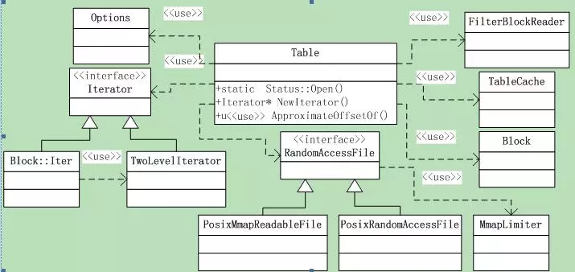

leveldb源码分析9
本系列《leveldb源码分析》共有22篇文章，这是第九篇
6 SSTable之3
6.5 读取sstable文件
6.5.1 类层次
Sstable文件的读取逻辑在类Table中，其中涉及到的类还是比较多的，如图6.5-1所示。

Table类导出的函数只有3个，先从这三个导出函数开始分析。其中涉及到的类（包括上图中为画出的）都会一一遇到，然后再一一拆解。
本节分析sstable的打开逻辑，后面再分析key的查找与数据遍历。
6.5.2 Table::Open()
打开一个sstable文件，函数声明为：
static Status Open(const Options& options, RandomAccessFile* file,
uint64_tfile_size, Table** table);
这是Table类的一个静态函数，如果操作成功，指针*table指向新打开的表，否则返回错误。
要打开的文件和大小分别由参数file和file_size指定；option是一些选项；
下面就分析下函数逻辑：
1\
S1 首先从文件的结尾读取Footer，并Decode到Footer对象中，如果文件长度小于Footer的长度，则报错。Footer的decode很简单，就是根据前面的Footer结构，解析并判断magic number是否正确，解析出meta index和index block的偏移和长度。
*table = NULL;
if (size <Footer::kEncodedLength)
{
// 文件太短
returnStatus::InvalidArgument("file is too short to be an sstable");
}
charfooter_space[Footer::kEncodedLength]; // Footer大小是固定的
Slice footer_input;
Status s = file->Read(size -Footer::kEncodedLength, Footer::kEncodedLength,
&footer_input, footer_space);
if (!s.ok()) return s;
Footer footer;
s =footer.DecodeFrom(&footer_input);
if (!s.ok()) return s;
S2 解析出了Footer，我们就可以读取index block和meta index了，首先读取index block。
BlockContents contents;
Block* index_block = NULL;
if (s.ok())
{
s = ReadBlock(file, ReadOptions(),footer.index_handle(), &contents);
if (s.ok())
{
index_block = newBlock(contents);
}
}
这是通过调用ReadBlock完成的，下面会分析这个函数。
S3 已经成功读取了footer和index block，此时table已经可以响应请求了。构建table对象，并读取metaindex数据构建filter policy。如果option打开了cache，还要为table创建cache。
if (s.ok())
{
// 已成功读取footer和index block: 可以响应请求了
Rep* rep = new Table::Rep;
rep->options = options;
rep->file = file;
rep->metaindex_handle =footer.metaindex_handle();
rep->index_block =index_block;
rep->cache_id =(options.block_cache ? options.block_cache->NewId() : 0);
rep->filter_data = rep->filter= NULL;
*table = new Table(rep);
(*table)->ReadMeta(footer);
// 调用ReadMeta读取metaindex
}
else
{
if (index_block) deleteindex_block;
}
到这里，Table的打开操作就已经为完成了。下面来分析上面用到的ReadBlock()和ReadMeta()函数。
6.5.3 ReadBlock()
前面讲过block的格式，以及Block的写入（TableBuilder::WriteRawBlock），现在我们可以轻松的分析Block的读取操作了。
这是一个全局函数，声明为：
Status ReadBlock(RandomAccessFile* file, const ReadOptions& options,
const BlockHandle&handle, BlockContents* result);
下面来分析实现逻辑：
2
S1 初始化结果result，BlockContents是一个有3个成员的结构体。
result->data = Slice();
result->cachable = false; // 无cache
result->heap_allocated =false; // 非heap分配
S2 根据handle指定的偏移和大小，读取block内容，type和crc32值，其中常量kBlockTrailerSize=5= 1byte的type和4bytes的crc32。
Status s = file->Read(handle.offset(),handle.size() + kBlockTrailerSize,
&contents, buf);
S3 如果option要校验CRC32，则计算content + type的CRC32并校验。
S4 最后根据type指定的存储类型，如果是非压缩的，则直接取数据赋给result，否则先解压，把解压结果赋给result，目前支持的是snappy压缩。
另外，文件的Read接口返回的Slice结果，其data指针可能没有使用我们传入的buf，如果没有，那么释放Slice的data指针就是我们的事情，否则就是文件来管理的。
if (data != buf)
{
// 文件自己管理，cacheable等标记设置为false
delete[] buf;
result->data =Slice(data, n);
result->heap_allocated= result->cachable =false;
}
else
{
// 读取者自己管理，标记设置为true
result->data =Slice(buf, n);
result->heap_allocated= result->cachable = true;
}
对于压缩存储，解压后的字符串存储需要读取者自行分配的，所以标记都是true。
6.5.4 Table::ReadMeta()
解决完了Block的读取，接下来就是meta的读取了。函数声明为：
void Table::ReadMeta(const Footer& footer)
函数逻辑并不复杂 。
3
S1首先调用ReadBlock读取meta的内容
if(rep_->options.filter_policy == NULL) return;
// 不需要metadata
ReadOptions opt;
BlockContents contents;
if (!ReadBlock(rep_->file,opt, footer.metaindex_handle(), &contents).ok())
{
return; // 失败了也没报错，因为没有meta信息也没关系
}
S2 根据读取的content构建Block，找到指定的filter；如果找到了就调用ReadFilter构建filter对象。Block的分析留在后面。
Block* meta = newBlock(contents);
Iterator* iter =meta->NewIterator(BytewiseComparator());
std::string key ="filter.";
key.append(rep_->options.filter_policy->Name());
iter->Seek(key);
if (iter->Valid() &&iter->key() == Slice(key)) ReadFilter(iter->value());
delete iter;
delete meta;
6.5.5 Table::ReadFilter()
根据指定的偏移和大小，读取filter，函数声明：
void ReadFilter(const Slice& filter_handle_value);
简单分析下函数逻辑：
4
S1 从传入的filter_handle_value Decode出BlockHandle，这是filter的偏移和大小；
BlockHandle filter_handle;
filter_handle.DecodeFrom(&filter_handle_value);
S2 根据解析出的位置读取filter内容，ReadBlock。如果block的heap_allocated为true，表明需要自行释放内存，因此要把指针保存在filter_data中。最后根据读取的data创建FilterBlockReader对象。
ReadOptions opt;
BlockContents block;
ReadBlock(rep_->file, opt,filter_handle, &block);
if (block.heap_allocated)rep_->filter_data = block.data.data();
// 需要自行释放内存
rep_->filter = newFilterBlockReader(rep_->options.filter_policy, block.data);
以上就是sstable文件的读取操作，不算复杂。